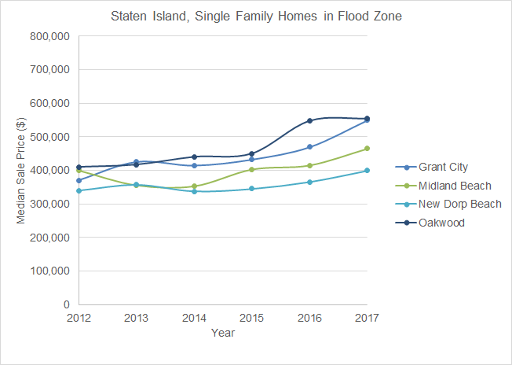

CP 101 Assignment 3Urban Impact of Hurricane Sandy in New York
Impact on Housing Values
## Data and Methodology
To examine the effects the storm had on housing prices, we did informal difference in difference analyses. We decided to do analysis at both the neighborhood level and at the census tract level. For the neighborhood level analysis, the data we used for housing prices was gathered from NYC Department of Finance, which included all sales from all boroughs from 2005-2017. We compared units sold in the neighborhoods within the inundation zones from 2012-2017 and then compared them to units sold in adjacent neighborhoods outside the inundation zones. For our tract level analyses, we used Social Explorer to create interactive maps based on ACS data, comparing the percent change in median housing price for adjacent tracts that were inside and outside of the inundation zone.
For both the neighborhood and tract level analyses, we will look at estimates in 2012 versus 2013 to first show what occurred in the immediate aftermath of Hurricane Sandy, and then we will compare 2012 versus 2017 to show whether or not housing prices have recovered and stabilized as the market has readjusted over time.
In southern Brooklyn, we looked at the following neighborhoods:
* in flood zones: Sea Gate, Coney Island, Brighton Beach, Gravesend, and Sheepshead Bay
* outside of flood zones, for comparison: Midwood and Bensonhurst
Brooklyn Neighborhood Map
Source: Baruch College NYCdata
In south-eastern Staten Island, we looked at the following neighborhoods:
* in the flood zones: New Dorp Beach, Oakwood, Midland Beach, and Grant City
* outside of flood zones, for comparison: Richmond Town, New Dorp, and South Beach
Staten Island Neighborhood Map
Source: Baruch College NYCdata
## Impacted Homes
Using map data from NYC Planning, we mapped out the one and two family homes that were in the Sandy inundation zones, based on the building land use code.
One & Two Family Homes in Sandy Inundation Zones
Source: NYC Planning PLUTO, NYC Open Data
## Neighborhood Level Analysis
Our hypothesis was that *Hurricane Sandy would have a lasting detrimental impact on housing prices for properties in the inundation zones.*
To test our hypothesis, we looked at median sale prices for one and two family homes in our neighborhoods of focus, from 2012 to 2017. __Click on each of the charts for a full-sized view.__
#### Housing Sales in Brooklyn
').show()" class="modal-trigger">
').show()" class="modal-trigger">
_Source: NYC Department of Finance_
#### Housing Sales in Staten Island
').show()" class="modal-trigger">
').show()" class="modal-trigger">
_Source: NYC Department of Finance_
From our neighborhood level analysis, we see that there was almost universally an initial drop in one and two family home values from 2012-2013 for homes in the inundation zones, which we expected in the storm’s immediate aftermath. For homes in adjacent neighborhoods out of the inundation zone, we see that housing prices kept rising over this same 2012-2013 period. So for the first year following the storm, our hypothesis held. However, we see that there was an continued increase in prices from 2014-2016, as the market began recovering and prices followed. As of 2017, the year-to-year increase in housing prices for homes in and out of the inundation zone basically mirror each other and should continue to move upward in tandem as New York City’s entire housing market is restored to equilibrium.
### Housing Assistance
This map shows that the average housing assistance given for the inundation zone areas was higher than that of areas out of the zones. This likely contributed to the speed at which the housing market recovered, as damaged properties were repaired and could sell for higher prices, leading to the trends seen in the graphs after 2013.
IHP Average Housing Assistance by Zipcode
Source: FEMA
### Tract Level Analysis
The following maps in Social Explorer show the pairs of tracts we are analyzing, and their median housing values. We chose six tracts in the flood zones, and six adjacent tracts outside of the flood zones for comparison. Map 1 is from 2012 ACS 5-Year Estimates, while Map 2 is for 2017. Map 2 also shows the designated flood zone in blue.
Median House Value in 2012 vs. 2017
Source: ACS, Social Explorer
These are the data tables with percent change to give a quantitative overview. The highlighted cells are those that support our hypothesis, and discussed in our analysis below.
Staten Island Median House Values (% Change)
Tract
2012 vs 2013
2012 vs 2017
70 (in flood zone)
-3.1
-13.3
96.02 (outside flood zone)
-8.7
-6.3
112.02 (in flood zone)
-6.0
-11.6
122 (outside flood zone)
-3.1
-8.2
128.06 (in flood zone)
-18.7
-4.3
132.01 (outside flood zone)
8.9
17.0
Source: ACS 5-Year Estimates
Brooklyn Median House Values (% Change)
Tract
2012 vs 2013
2012 vs 2017
300 (in flood zone)
-5.8
-2.3
298 (outside flood zone)
2.5
22.3
308 (in flood zone)
14.3
18.8
386 (outside flood zone)
-1.2
8.5
374.01 (in flood zone)
-6.6
-2.1
388 (outside flood zone)
-2.3
0.5
Source: ACS 5-Year Estimates
For our tract level analysis, the 2012 vs. 2013 column of the tables that 2 out of 3 tract pairs in both Brooklyn and Staten Island support our hypothesis that housing values in the inundation zones were depressed in the immediate aftermath of the storm. In the 2012 vs. 2017 column, all pairs except one followed our hypothesis as well, as the percent change was higher for tracts outside of the flood zone. We determined that forming a concrete conclusion about what happened in all tracts within a neighborhood would require a far deeper analysis, as we only selected a few tracts randomly, which likely aren’t representative of entire neighborhoods. It seems that the changes in housing values seen in the tracts we selected were random and probably had something to do with other factors and omitted variables that we did not take into consideration, which would require an econometric analysis, which is outside the scope of this course.